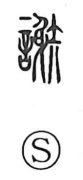

謝

Uncategorized
Kun: ayamaru, wabiru | On: sha
to thank ・ gratitude ・ to apologize ・ apology ・ to decline ・ to leave ・ to die
Explanation
謝 is a phono-semantic character that sets 言, “speech,” beside 射, which supplies the sound sha. The Shuowen explains it as 辞去, “to take one’s leave,” that is, the words spoken when departing. From this core sense of departure the character broadened to mean change or replacement (as in 代謝), to withdraw or decline, and by euphemism to leave this world (謝世). In later usage it came to encompass formal expressions of courtesy—giving thanks (感謝, 謝礼, 謝辞) and acknowledging fault (謝罪, 陳謝)—whence its central meanings “to thank” and “to apologize.”